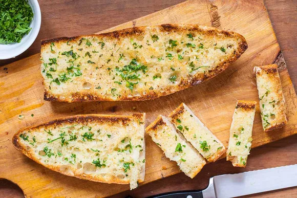

Garlic Bread

Garlic Bread
Ingredients Used
- 1 16 ounce loaf Italian bread or French bread
- 1/2 cup unsalted butter, softened
- 2 large cloves garlic, smashed and minced
- 1 heaping tablespoon chopped fresh parsley
- 1/4 cup freshly grated Parmesan cheese
Steps:
- Preheat over to 350 degrees Farenheit.
- Cut loaf in half, horizontally. Mis the butter, garlic, and parsley in small bowl.
- Spread butter mixture over the two bread halves
- Heat in oven for 10 minutes.
- Sprinkle parmesan cheese over bread if desired. Return to oven. Boil on high heat for 2-3 minutes until edges of bread start to toast.
- Remove from oven and let it cool for a minute. Remove from pan and use bread knife to cut into 1 inch thick slices.